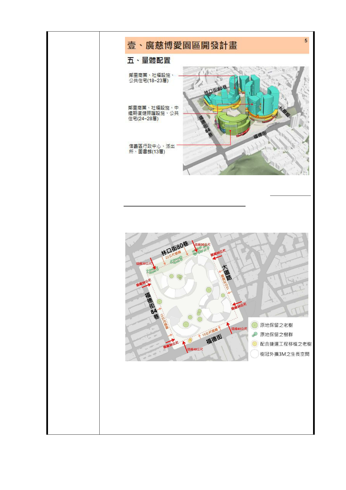

二、 104年5月12日之細部計畫公展明確說明了臨林口街80
巷側應留設22公尺帶狀式開放空間，因此將來9月廣慈
平宅拆除後，依法原地應做綠美化，不可以在22公尺
帶狀式開放空間內做任何其他臨時性的用途。
三、 都發局長在說明會中一再強調採「以屋就樹」的概念
進行設計，我們希望除了「以屋就列冊受保護的老
樹」，也能保護廣慈園區內一大片四、五十年以上具
歷史文化意涵的老樹群。呼籲北市府在工程規劃設計
階段，優先評估樹木原地保留的可行性，在非不得已
的情況下，才考慮進行樹木移植。
- 22 -